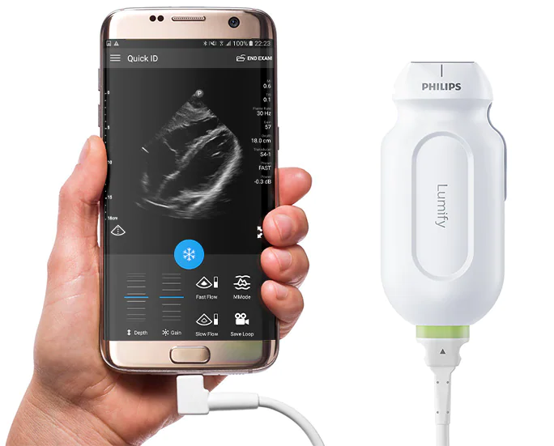
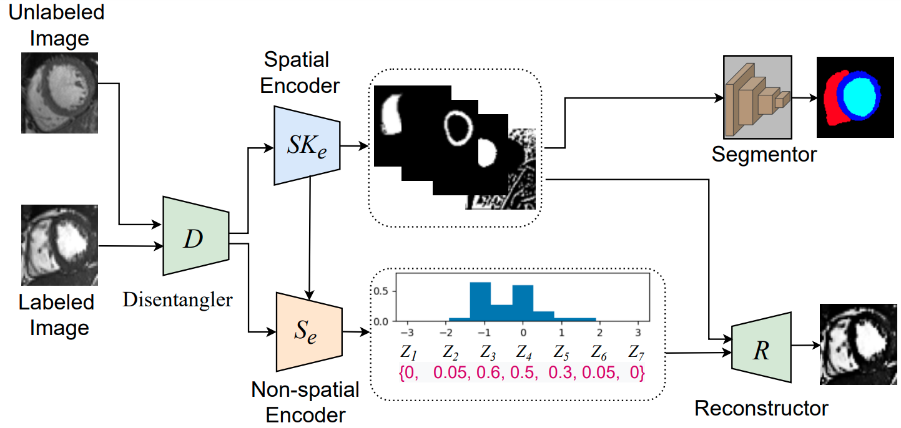

S. M. Kamrul Hasan, PhD
Center for Imaging Science
|
|


About Me
I finished my PhD from Chester F. Carlson Center for Imaging Science at Rochester Institute of Technology (RIT), Rochester, NY under the direction of my advisor, Dr. Cristian Linte and funded by both NSF and NIH grants. My PhD Thesis was titled “From Fully-Supervised Single-Task to Semi-Supervised Multi-Task Deep Learning Architectures for Segmentation in Medical Imaging Applications”. I worked as an AI Research Intern at Philips Research in Cambridge, Massachusetts where I designed an extremely optimized object detection framework for object detection of COVID-19 features in ultrasound images (Ultrasound scans of the lung image) captured by Lumify portable Ultrasound probe. I worked for IBM Research in California as a Machine Learning Research Intern, where I've worked on deep neural network pruning/optimization for better explainable AI.
Research Interests
My research focuses broadly on developing and optimizing machine learning models for analyzing multi-modal images to enable more accurate automatic semantic and instance segmentation, 4D deformable registration, object detection, video object motion estimation, out-of-distribution (uncertainty) estimation, as well as video inpainting. I have profound knowledge of optimized label-efficient machine learning-based imaging problems. I have strong hands-on expertise in semi-/self-/un-supervised learning, representation learning, deep generative models, probabilistic Bayesian Monte Carlo models, and posterior estimation models.
News
- [Jan. 2023] Successfully defended my PhD Dissertation Defense.
- [May 2022] One paper got accepted to MIUA 2022.
- [May 2022] Got accepted to Oxford ML Summer School (~ 5% acceptance rate).
- [Mar. 2022] Successfully Passed my Ph.D. Candidacy Exam.
- [Oct. 2021] Attended the Microsoft Research Summit 2021.
- [Aug. 2021] Started Research Internship at Philips, Research North America, Cambridge, MA, USA.
- [May. 2021] Got accepted to UCL Medical Image Computing Summer School (MedICSS), London.
- [Mar. 2021] Accepted offer as AI Research Intern at Philips Research, Cambridge, Massachusetts.
- [Nov. 2020] Started Winter School at Center for Computational Medicine in Cardiology, Switzerland.
- [Oct. 2020] Paper got accepted at SPIE 2021, San Diego, California.
- [Aug. 2020] Received MICCAI Student Award as a part of NSF grant.
- [Aug. 2020] Started Research Internship at IBM, Almaden Research Center, San Jose, California.
- [May. 2020] Accepted offer as Research Intern at IBM , San Jose, California.
- [Apr. 2020] Presented paper at ISBI 2020.
- [Feb. 2020] Reviewer for MICCAI 2020..
- [Nov. 2019] U-NetPlus paper accepted for oral presentation at RIT Graduate Showcase 2019.
Professional Experience
-
Philips Research
AI Research Intern 2021
Cambridge, Massachusetts
Aug 2021 - Nov 2021
- Designed an optimized (60FPS) lung features detector to improve PHILIPS LUMIFY handheld transducer
- Demonstrated 38% more accuracy and had 86% fewer parameters compared to the SSD detection model
- Deployed the framework (0.3 million) on an Android OS-based mobile platform for real-time inference
- Delivered a semi-supervised feature detection system in the team from scratch for product development

-
IBM Research
Machine Learning Research Intern 2020
San Jose, California
Aug 2020 - Nov 2020
- [Project 1] Prototype an explainable AutoML repository of subnetworks based on similarity and ranking algorithms having 82.9% fewer parameters and 28 times accurate than the baseline
- [Project 2] Restructured channel-wise pruning convolutional layers of transfer learning models on image classification tasks while achieving pruning ratios of up to 99.5% in parameters and 95.4% in FLOPs
- Scripted more than 1,500 lines of code and delivered the project in the team on time


-
University of Oxford
Machine Learning Summer School 2022
Oxford, United Kingdom
Jun 2022 - Aug 2022
- Statistical Learning | Markov Decision Theory | Self-supervised Learning (Top 5%)
-
Rochester Institute of Technology
Research Assistant
RIT Biomedical Modeling, Visualization and Image-guided Navigation Lab
Rochester, NY
Aug 2018 - Nov 2022
Advisor: Cristian A. Linte, Ph.D
- Tailored a Student-Teacher (gradient-to-gradient) augmentation-driven meta pseudo-labeling model by distilling knowledge through self-training, scaling up a 4.4% improvement in 3D semantic cardiac segmentation accuracy with a statistical hypothesis testing experiments on only 10% labeled data
- Extracted noise-free 3D isosurface mesh with smoothing marching cubes algorithm and generated deformation field from a VoxelMorph-based 4D registration framework to predict cardiac motion which was four times faster than the baseline
- Acquired solid knowledge of imaging chain, including optics, sensors, ISP, and psycho-physical experiments with multi-view geometry of computer vision ranging from sensor fusion (LIDAR and Camera) to camera calibration (intrinsic and extrinsic parameter estimation, Epipolar geometry/stereo vision), image localization (edge, line, corner, and blob detection), perception, and statistical signal processing

Software Development
-
NifTi File Viewer
macOS Compatible
- Built macOS software to view NIfTI files which is a type of file format for neuroimaging

-
MICCAI student travel award as a part of NSF Grant (2020) -
Best paper award , Western New York Image and Signal Processing Workshop (2018) -
Imagine Festival RIT Award from KODAK (2017) -
RIT Graduate Scholarship (2017) -
Awarded for achieving GPAs of 3.85∼4.0 in total of six out of eight semesters (2012-2015) -
Conference and Journal Reviews:
Scientific Report (Nature) 2022
NeurIPS 2020
MICCAI 2020
IEEE Access 2019
IJCARS 2020
IPCAI 2020

Publications
|  | Learning Deep Representations of Cardiac Structures for 4D Cine MRI Image Segmentation through Semi-supervised Learning Applied Science , 2022 [paper][code][dataset][bibtex][Video 1] In this paper, we propose a semi-supervised model --- namely, Combine-all in Semi-Supervised Learning (CqSL) --- to demonstrate the power of a simple combination of a disentanglement block, variational autoencoder (VAE), generative adversarial network (GAN), and a conditioning layer-based reconstructor for performing two important tasks in medical imaging: segmentation and reconstruction. Our work is motivated by the recent progress in image segmentation using semi-supervised learning (SSL), which has shown good results with limited labeled data and large amounts of unlabeled data. |
| The impact of class-dependent label noise in medical image (MedMNIST dataset) classification SPIE Medical Imaging -- Image Processing , 2023 [paper][code][dataset][bibtex][Video 1] In this paper, we study this hypothesis using two publicly available datasets: a 2D organ classification dataset with target organ classes being visually distinct, and a histopathology image classification dataset where the target classes look very similar visually. Our results show that the label noise in one class has much higher impact on the model's performance on other classes for histopathology dataset compared to the organ dataset. |
|

|
STAMP: A Self-training Student-Teacher Augmentation-driven Meta Pseudo-labeling Framework for 3D Cardiac MRI Image Segmentation S. M. Kamrul Hasan and Cristian A. Linte. Medical Image Understanding and Analysis (MIUA) , 2022 oral [paper][code][dataset][bibtex][Video 1] The proposed method uses self-training (through meta pseudo-labeling) in concert with a Teacher network that instructs the Student network by generating pseudo-labels given unlabeled input data. Meta pseudo-labeling methods allow the Teacher network to constantly adapt in response to the performance of the Student network on the labeled dataset, hence enabling the Teacher to identify more effective pseudo-labels to instruct the Student. Moreover, to improve generalization and reduce error rate, we apply both strong and weak data augmentation policies, to ensure the segmentor outputs a consistent probability distribution regardless of the augmentation level. |

|
Joint Segmentation and Uncertainty Estimation of Ventricular Structures from Cardiac MRI using Probability Calibration S. M. Kamrul Hasan and Cristian A. Linte. International Conference of the Eng. in Med. & Bio (EMBC), 2022 oral [paper][code][dataset][bibtex][Video 1] In this work, we used a Bayesian version of our previously proposed CondenseUNet framework featuring both a learned group structure and a regularized weight-pruner to reduce the computational cost in volumetric image segmentation and help quantify predictive uncertainty. Our study further showcases the potential of our deep-learning framework to evaluate the correlation between the uncertainty and the segmentation errors for a given model. The proposed model was trained and tested on the Automated Cardiac Diagnosis Challenge (ACDC) dataset featuring 150 cine cardiac MRI patient dataset for the segmentation and uncertainty estimation of the left ventricle (LV), right ventricle (RV), and myocardium (Myo) at end-diastole (ED) and end-systole (ES) phases. |


|
Calibration of cine MRI segmentation probability for uncertainty estimation using a Multi-Task Cross-Task Learning architecture. S. M. Kamrul Hasan and Cristian A. Linte. SPIE Medical Imaging, 2022 oral [paper][code][dataset][bibtex][Video 1] In this work we propose a novel method that incorporates uncertainty estimation to detect failures in the segmentation masks generated by CNNs, our study further showcases the potential of our model to evaluate the correlation between the uncertainty and the segmentation errors for a given model. Furthermore, we introduce a multi-task Cross-task learning consistency approach to enforce the correlation between the pixel-level (segmentation) and the geometric-level (distance map) tasks. Our study serves as a proof-of-concept of how uncertainty measure correlates with the erroneous segmentation generated by different deep learning models, further showcasing the potential of our model to flag low-quality segmentation from a given model in our future study. |
| Motion Extraction of the Right Ventricle from 4D Cardiac Cine MRI Using A Deep Learning-Based Deformable Registration Framework. Roshan Reddy Upendra*, S. M. Kamrul Hasan*, Richard Simon, Brian Jamison Wentz, Suzanne M. Shontz, Michael S. Sacks, and Cristian A. Linte. "The first two authors share equal joint first authorship" International Conference of the Engineering in Medicine & Biology Society (EMBC), 2021, oral [paper][code][dataset][bibtex][Video 1] In this work, we describe the development of dynamic patient-specific right ventricle (RV) models associated with normal subjects and abnormal RV patients to be subsequently used to assess RV function based on motion and kinematic analysis. In our study, we use a deep learning-based deformable network that takes 3D input volumes and outputs a motion field which is then used to generate isosurface meshes of the cardiac geometry at all cardiac frames by propagating the end-diastole (ED) isosurface mesh using the reconstructed motion field. |
|


|
A Multi-Task Cross-Task Learning Architecture for Ad-hoc Uncertainty Estimation in 3D Cardiac MRI Image Segmentation. S. M. Kamrul Hasan and Cristian A. Linte. Computing in Cardiology , 2021, oral [paper][code][dataset][bibtex][Video 1] To generate smoother and accurate segmentation masks from 3D cardiac MR images, we present a Multi-task Cross-task learning consistency approach to enforce the correlation between the pixel-level (segmentation) and the geometric-level (distance map) tasks. Our extensive experimentation with varied quantities of labeled data in the training sets justify the effectiveness of our model for the segmentation of left atrial cavity from Gadolinium-enhanced magnetic resonance (GE-MR) images. With the incorporation of uncertainty estimates to detect failures in the segmentation masks generated by CNNs, our study further showcases the potential of our model to flag low quality segmentation from a given model. |


|
Segmentation and removal of surgical instruments for background scene visualization from Endoscopic / Laparoscopic video. S. M. Kamrul Hasan, Richard A. Simon, and Cristian A. Linte. SPIE Medical Imaging, 2021, oral [paper][code][dataset][bibtex][Video 1] [Video 2 ][Video 3] [Video 4] In this work, we implement a fully convolutional segmenter featuring both a learned group structure and a regularized weight-pruner to reduce the high computational cost in volumetric image segmentation. We validated our framework on the ACDC dataset featuring one healthy and four pathology groups imaged throughout the cardiac cycle. Based on these results, this technique has the potential to become an efficient and competitive cardiac image segmentation tool that may be used for cardiac computer-aided diagnosis, planning and guidance applications. |
| L-CO-Net: Learned Condensation-Optimization Network for Clinical Parameter Estimation from Cardiac Cine MRI. S. M. Kamrul Hasan, and Cristian A. Linte. International Conference of the Engineering in Medicine & Biology Society (EMBC), 2020, oral [paper][code][dataset][bibtex] In this work, we implement a fully convolutional segmenter featuring both a learned group structure and a regularized weight-pruner to reduce the high computational cost in volumetric image segmentation. We validated our framework on the ACDC dataset featuring one healthy and four pathology groups imaged throughout the cardiac cycle. Our technique achieved Dice scores of 96.8% (LV blood-pool), 93.3% (RV blood-pool) and 90.0% (LV Myocardium) with five-fold cross-validation and yielded similar clinical parameters as those estimated from the ground truth segmentation data. Based on these results, this technique has the potential to become an efficient and competitive cardiac image segmentation tool that may be used for cardiac computer-aided diagnosis, planning, and guidance applications. |
|

|
Learned Condensation-Optimization Network: A regularized Network for improved Cardiac Ventricles Segmentation on Breath-Hold Cine MRI. S. M. Kamrul Hasan, and Cristian A. Linte. International Symposium on Biomedical Imaging (ISBI), 2020, oral [paper][code][dataset][bibtex] In this work, we implement a fully convolutional segmenter featuring both a learned group structure and a regularized weight-pruner to reduce the high computational cost in volumetric image segmentation. We validated the framework on the ACDC dataset and achieved accurate segmentation, leading to mean Dice scores of 96.80% (LV blood-pool), 93.33% (RV blood-pool), 90.0% (LV Myocardium) and yielded similar clinical parameters as those estimated from the ground-truth segmentation data. |


|
CondenseUNet: a memory-efficient condensely-connected architecture for bi-ventricular blood pool and myocardium segmentation. S. M. Kamrul Hasan, and Cristian A. Linte. SPIE Medical Imaging, 2020, oral [paper][code][dataset][bibtex] In this work, we propose a novel memory-efficient Convolutional Neural Network (CNN) architecture as a modification of both CondenseNet, as well as DenseNet for ventricular blood-pool segmentation by introducing a bottleneck block and an upsampling path. Our experiments show that the proposed architecture runs on the Automated Cardiac Diagnosis Challenge (ACDC) dataset using half (50%) the memory requirement of DenseNet and one-twelfth (∼ 8%) of the memory requirements of U-Net, while still maintaining excellent accuracy of cardiac segmentation. |

|
Toward Quantification and Visualization of Active Stress Waves for Myocardial Biomechanical Function Assessment. Niels F Otani, Dylan Dang, Christopher Beam, Fariba Mohammadi, Brian Wentz, S. M. Kamrul Hasan, Suzanne M Shontz, Karl Q Schwarz, Sabu Thomas, and Cristian A. Linte. Computing in Cardiology (CinC), 2019. [paper][code][dataset][bibtex] In the forward model, tissue deformation was generated using a test wave with active stresses that mimic the myocardial contractile forces. The generated deformation field was used as input to an inverse model designed to reconstruct the original active stress distribution. We numerically simulated malfunctioning tissue regions (experiencing limited contractility and hence active stress) within the healthy tissue. We also assessed model sensitivity by adding noise to the deformation field generated using the forward model. The difference image between the original and reconstructed active stress distribution suggests that the model accurately estimates active stress from tissue deformation data with a high signal-to-noise ratio. |


|
U-NetPlus: A Modified Encoder-Decoder U-Net Architecture for Semantic and Instance Segmentation of Surgical Instruments from Laparoscopic Images. S. M. Kamrul Hasan, and Cristian A. Linte. International Conference of the IEEE Engineering in Medicine and Biology (EMBC), 2020, oral [paper][code][dataset][bibtex] In this work, we modify the U-Net architecture by introducing a pre-trained encoder and re-design the decoder part, by replacing the transposed convolution operation with an upsampling operation based on nearest-neighbor (NN) interpolation. To further improve performance, we also employ a very fast and flexible data augmentation technique. We trained the framework on 8 x 225 frame sequences of robotic surgical videos available through the MICCAI 2017 EndoVis Challenge dataset and tested it on 8 x 75 frame and 2 x 300 frame videos. Using our U-NetPlus architecture, we report a 90.20\% DICE for binary segmentation, 76.26% DICE for instrument part segmentation, and 46.07% for instrument type (i.e., all instruments) segmentation, outperforming the results of previous techniques implemented and tested on these data. |
| A Modified U-Net Convolutional Network Featuring a Nearest-neighbor Re-sampling-based Elastic-Transformation for Brain Tissue Characterization and Segmentation. S. M. Kamrul Hasan, and Cristian A. Linte. Western New York Image and Signal Processing Workshop (WNYISPW), 2018, oral [paper][code][dataset][bibtex] Though this model works better on BRATS 2015 dataset by using pixel-wise segmentation map of the input image like an auto-encoder which assures best segmentation accuracy, but it is not correct for all the cases. So, I have planned to improve this U-net model by replacing the de-convolution part with the upsampled by Nearest-neighbor algorithm and also by using elastic transformation for increasing the training dataset to make the model more robust on Low graded tumor. I had trained my NNRET U-net model on BRATS 2017 dataset and got a better performance than the state of the art classic U-net model. |
|
Talks
| 2022 | Podcast | Bangladeshi Researchers in Data Science and Machine Learning |
| 2021 | Presentation | Philips Research North America |
| 2021 | Workshop | RIT Co-op Placement (Guest Speaker) |
| 2020 | Presentation | IBM Almaden Research Center |